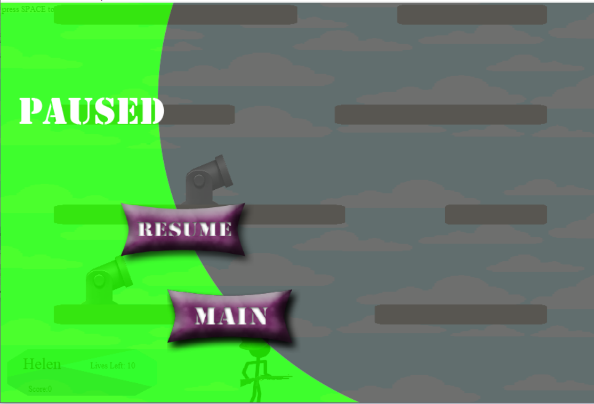
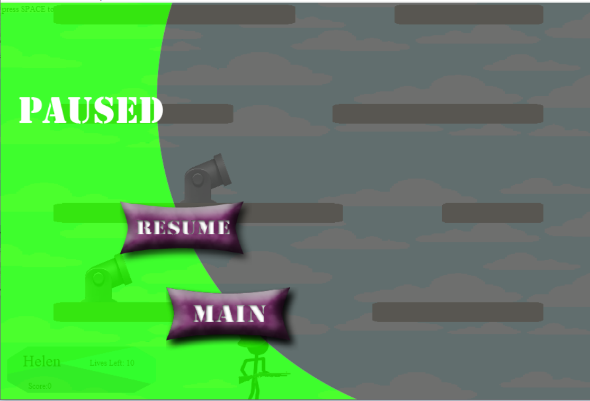

Gunman Jump
A Single/Multiplayer Platform Shooting Game
Introduction
Gunman Jump is a video game inspired by Doodle Jump and Gun Mayhem. I wrote this game in Grade 12 using Actionscript3, and since this is a personal project, I have uploaed all source code on GitHub. Portal to the code is here. Below are two short demos I recorded for the game. On the left is a video walkthrough for the single player mode, and on the right is for multiplayer mode.
Gameplay
Rules
In the traditional Doodle Jump game, the aim is to guide the main character up a never-ending series of platforms without falling. In Gun Mayhem, the task is to destroy all enemies by shooting them down a stationary platform. Gunman Jump is a combination of the two, so the player’s goal is to stay on the platform by jumping up the levels as the platforms move down, while also avoiding bullets that will nudge the player off the platforms. In single player mode, there are randomly positioned cannons on parts of the platforms, and they will periodically shoot bullets in fixed directions, so the player should avoid being shot while moving his or her way up. In multiplayer mode, the game can support up to three players, and each player’s task is to nudge the enemies off the platform by shooting at them.

 

Character Customization
A fun feature of the game I have decided to implement is the customization of characters. At the start of the game, it will prompt the player(s) to enter a name and to pick a costume. It will also ask the player(s) to specify the number of lives for each player in the round. After entering the game, each player can be revived up to the number of lives specified.
Leaderboard
Each time when a player shoots someone off the platforms in multiplayer mode, that player will be awarded with points. When the game ends (only one player left standing), the game will switch to a leaderboard view with the history scores of all existing players in descending order of scores.